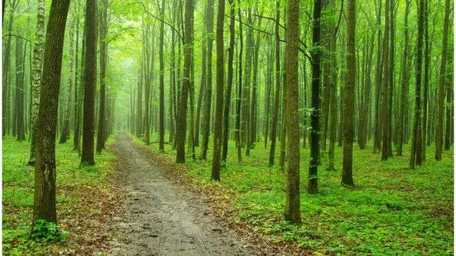

Majestatyczne lasy Polskie
Zamów bilet już dziś a otrzymasz 20% zniżkę na zwiedzanie najwybitniejszego parku narodowego w Polsce!Odwiedź nas!
Stone Hause
Jedyny w swoim rodzaju kamienny dom, powstały prawdopodobnie przed 1936r. Jest jednocześnie najstarszym eksponatem w parku!

River
Naturalnie uformowana rzeka. Jest częścią większej rzeki w parku, tak jak większość zbiorników wodnych w tym nieziemskim miejscu.

Tries
Ścieżka dla pieszych oraz rowerów, w 100% wolna od spalin maszyn i miastowego smogu. Można cieszyć się świeżym powietrzem.